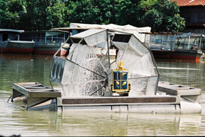

พระบาทสมเด็จพระเจ้าอยู่หัวภูมิพลอดุลยเดช รัชกาลที่ 9 ได้มีพระราชดำริให้มูลนิธิชัยพัฒนาดำเนินการวิจัย และพัฒนากังหันน้ำชัยพัฒนาขึ้น เพื่อบำบัดน้ำเสียด้วยวิธีการเติมอากาศ ทำให้น้ำเสียกลายเป็นน้ำดี และสามารถประยุกต์ใช้ในการอุปโภคบริโภคของประชาชน น้ำเสียจากโรงงานอุตสาหกรรม และเพิ่มออกซิเจนให้บ่อเพาะเลี้ยงสัตว์น้ำทางการเกษตร
กังหันน้ำชัยพัฒนา เครื่องกลเติมอากาศที่ผิวน้ำหมุนช้าแบบทุ่นลอย พระบาทสมเด็จพระเจ้าอยู่หัวทรงห่วงใยในความเดือดร้อนทุกข์ยากที่เกิดขึ้นนี้ ได้เสด็จพระราชดำเนินทอดพระเนตรสภาพน้ำเสียในพื้นที่หลายแห่งหลายครั้ง ทั้งในเขตกรุงเทพมหานคร ปริมณฑล และต่างจังหวัด พร้อมทั้งพระราชทานพระราชดำริเกี่ยวกับการแก้ไขน้ำเน่าเสีย ในระยะแรกระหว่างปี พ.ศ. 2527-2530 ทรงแนะนำให้ใช้น้ำที่มีคุณภาพดีช่วยบรรเทาน้ำเสียและวิธีกรองน้ำเสียด้วยผักตบชวาและพืชน้ำต่างๆ ซึ่งก็สามารถช่วยแก้ไขปัญหาได้ผลในระดับหนึ่ง
พื้นที่เป้าหมายใการดำเนินการปลูกหญ้าแฝกของกรมทางหลวงคือ เชิงลาดดินตัดเหนือคันทาง (Back Slope) เชิงลาดดินถมคันทาง (Side Slope) ที่สูงและมีแนวโน้มที่จะเกิดการชะล้างพังทลายของดิน สำหรับสายทางในพื้นที่ ภูเขา ภาคเหนือ ภาคใต้ และภาคตะวันออกเฉียงเหนือ ซึ่งส่วนใหญ่ปกคลุมด้วยดินทรายที่สลายตัวมาจากหินแกรนิตและหินทราย เป็นพื้นที่เป้าหมายเพื่อป้องกันการชะล้างพังทลายของดินและการอนุรักษ์ดิน
พระราชดำริ เมื่อวันที่ 24 ธันวาคม พ.ศ. 2531 พระบาทสมเด็จพระเจ้าอยู่หัวได้พระราชทานรูปแบบและพระราชดำริ เรื่องการแก้ไขปัญหาน้ำเสีย โดยการเติมออกซิเจนในน้ำ มีสาระสำคัญ คือ การเติมอากาศลงในน้ำเสีย มี 2 วิธีวิธีหนึ่ง ใช้อากาศอัดเข้าไปตามท่อเป่าลงไปใต้ผิวน้ำแบบกระจายฟองและอีกวิธีหนึ่ง น่าจะกระทำได้โดยกังหันวิดน้ำ วิดตักขึ้นไปบนผิวน้ำ แล้วปล่อยให้ตกลงไปยังผิวน้ำตามเดิม โดยที่กังหันน้ำดังกล่าวจะหมุนช้า ด้วยกำลังของมอเตอร์ไฟฟ้า ขนาดเล็กไม่เกิน 2 แรงม้า หรืออาจจะใช้พลังน้ำไหลก็ได้ จึงสมควรพิจารณาสร้างต้นแบบ แล้วนำไปติดตั้งทดลองใช้บำบัดน้ำเสียที่ภายในบริเวณโรงพยาบาลพระมงกุฎเกล้า และวัดบวรนิเวศวิหาร

กังหันน้ำชัยพัฒนา/p>